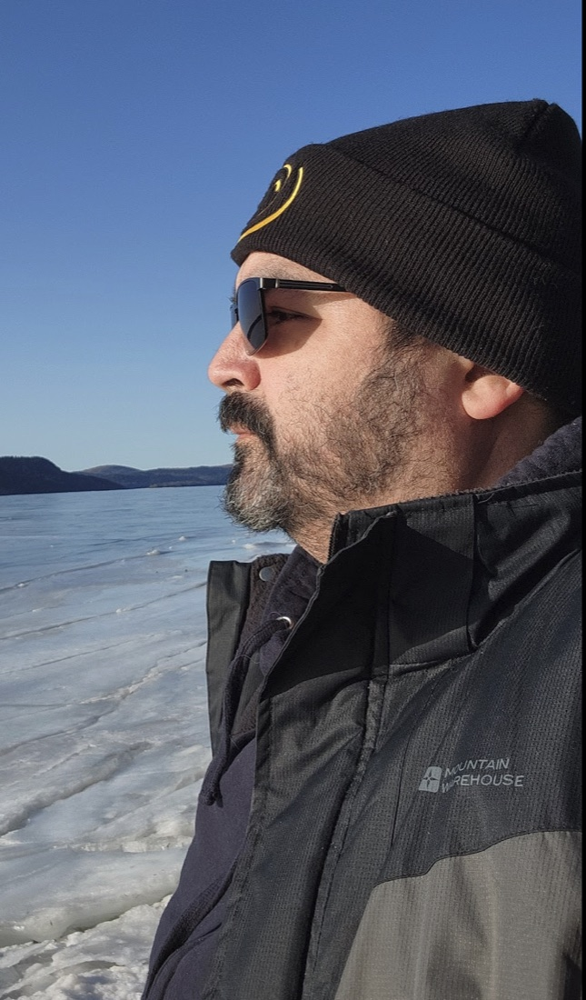
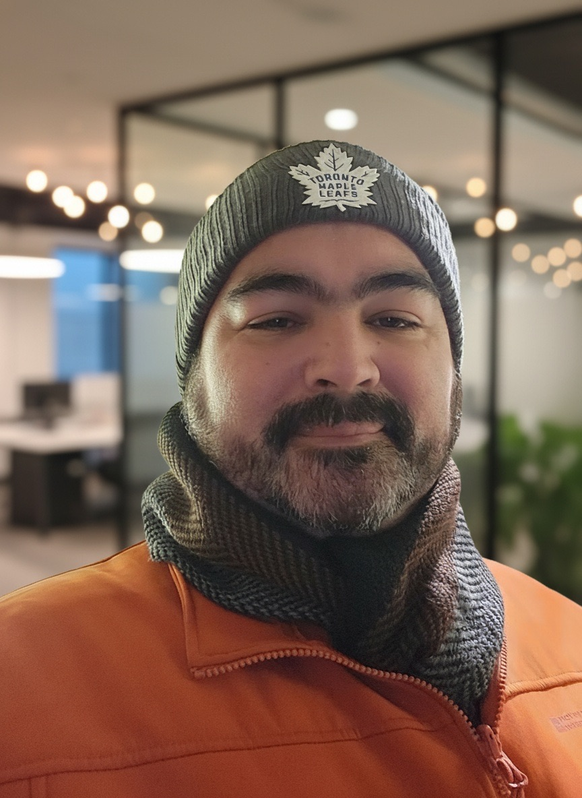
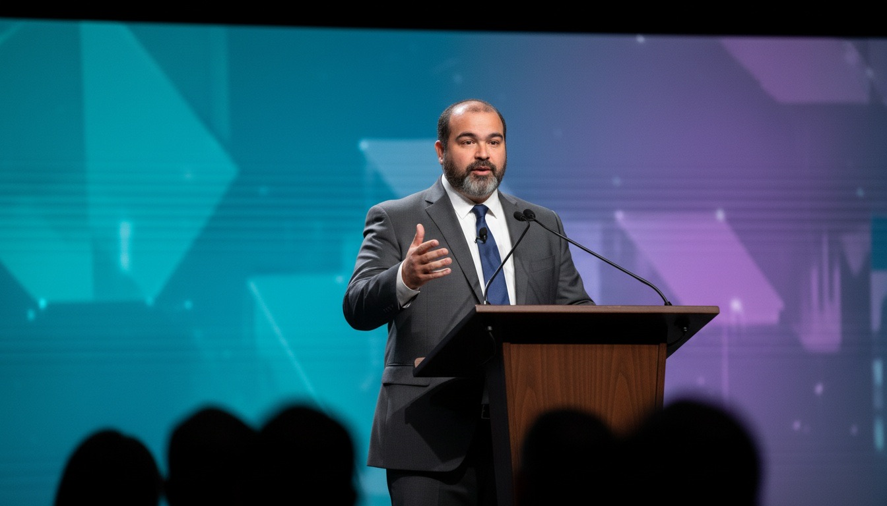

Team building
Formación de equipos
Hiring, mentoring and growing developers, designers and specialists into teams that perform.
Selección, mentoría y crecimiento de desarrolladores, diseñadores y especialistas en equipos de alto rendimiento.
30 years in IT, more than 20 of them leading engineering teams. I build software, and I build the teams that ship it.
30 años en el mundo IT, más de 20 de ellos liderando equipos de ingeniería. Construyo software y también los equipos que lo hacen realidad.

$ whoami pedro.arrioja $ cat profile.yml years_in_it: 30+ leading_teams: 20+ years current: - Engineering Manager @ Zensurance - Partner @ Cundasia™ stack: [Node, NestJS, PHP, .NET, AWS, AI] $

I started in technology in the mid-90s, while studying Computer Science Engineering, and I have not stopped since. Over three decades I went from writing desktop software in Delphi to designing APIs in NodeJS and NestJS on AWS, with every stage in between: Linux servers, the web, e-commerce, digital marketing and, today, AI applied to development and automation.
What I enjoy most is leading technical teams: aligning business goals with engineering, mentoring developers, defining processes (Agile + Scrum) and making sure what we deliver meets the client's standards. I have led teams of up to 25 programmers for clients in the United States, and I currently lead an engineering team at Zensurance.
I am bilingual (Spanish and English), self-motivated, and always reading and learning.
Empecé en tecnología a mediados de los 90, mientras estudiaba Ingeniería en Computación, y no he parado desde entonces. En tres décadas pasé de escribir software de escritorio en Delphi a diseñar APIs en NodeJS y NestJS sobre AWS, pasando por todas las etapas intermedias: servidores Linux, la web, e-commerce, marketing digital y, hoy, IA aplicada al desarrollo y la automatización.
Lo que más disfruto es liderar equipos técnicos: alinear los objetivos del negocio con la ingeniería, formar desarrolladores, definir procesos (Agile + Scrum) y asegurar que lo que entregamos cumple los estándares del cliente. He dirigido equipos de hasta 25 programadores para clientes en Estados Unidos y actualmente lidero un equipo de ingeniería en Zensurance.
Soy bilingüe (español e inglés), automotivado y siempre estoy leyendo y aprendiendo.
From a government IT department to distributed teams serving U.S. clients. Leadership is the common thread of my career.
Desde un departamento de IT gubernamental hasta equipos distribuidos para clientes en EE. UU. El liderazgo es el hilo conductor de mi carrera.

Hiring, mentoring and growing developers, designers and specialists into teams that perform.
Selección, mentoría y crecimiento de desarrolladores, diseñadores y especialistas en equipos de alto rendimiento.
Agile + Scrum rituals, Jira and clear processes so work ships on time and to standard.
Ceremonias Agile + Scrum, Jira y procesos claros para entregar a tiempo y con calidad.
Proposing new technologies to clients and guiding them from legacy systems to modern platforms.
Propongo nuevas tecnologías a los clientes y los guío de sistemas legados a plataformas modernas.
A leader who still codes: about 70% backend and 30% frontend, from architecture to code review.
Un líder que sigue programando: cerca de 70% backend y 30% frontend, de la arquitectura al code review.
I am a partner at Cundasia™, a B2B technology company that measures the human conditions behind every organization's performance: stress, psychosocial risk, engagement and stability, with continuous data instead of annual surveys and aligned with ISO 45003.
Soy socio de Cundasia™, una empresa de tecnología B2B que mide las condiciones humanas detrás del desempeño de cada organización: estrés, riesgo psicosocial, compromiso y estabilidad, con datos continuos en lugar de encuestas anuales y alineada con ISO 45003.
Conscious technology for sustainable human performance.
Tecnología consciente para un desempeño humano sostenible.
I lead one of Zensurance's engineering teams, improving, updating and building new APIs for the company's internal systems. I started as a contractor in September 2021 and joined full time in March 2022.
Lidero uno de los equipos de ingeniería de Zensurance, mejorando, actualizando y creando nuevas APIs para los sistemas internos de la empresa. Empecé como contratista en septiembre de 2021 y pasé a tiempo completo en marzo de 2022.
I led the software development area, building web solutions for major U.S. clients, with a team of 25 programmers, 1 designer and 1 SEO specialist. I also led digital transformation for several clients: proposing new technologies and overseeing development processes to meet their standards.
Lideré el área de desarrollo de software, creando soluciones web para clientes importantes de EE. UU., con un equipo de 25 programadores, 1 diseñador y 1 especialista SEO. También lideré la transformación digital de varios clientes: propuse nuevas tecnologías y supervisé los procesos de desarrollo para cumplir sus estándares.
I managed digital advertising projects (Facebook, Instagram and Google Ads): audits, campaigns and optimization for the lowest cost per conversion. I also built landing pages, e-commerce modules, tracking (Pixel, Tag Manager), split tests and Infusionsoft integrations.
Gestioné proyectos de publicidad digital (Facebook, Instagram y Google Ads): auditorías, campañas y optimización para el menor costo por conversión. También desarrollé landing pages, módulos de e-commerce, tracking (Pixel, Tag Manager), split tests e integraciones con Infusionsoft.
For ten years I led the institution's technology: strategic plans, systems audits, internal regulations and the automation of all procedures. I managed a team of 8 programmers and administered the Linux (Debian) infrastructure.
Durante diez años dirigí la tecnología de la institución: planes estratégicos, auditorías de sistemas, normativa interna y la automatización de todos los procedimientos. Dirigí un equipo de 8 programadores y administré la infraestructura Linux (Debian).
Windows and web software (on Linux servers). Promoted to IT Director.
Software para Windows y web (sobre servidores Linux). Ascendido a Director de IT.
Taught programming languages to Systems Engineering students.
Profesor de lenguajes de programación para estudiantes de Ingeniería de Sistemas.
Custom software for many industries, including:
Software a medida para muchas industrias, por ejemplo:
Up to date with current AI tools and methods, for both software development and business automation.
Al día con las herramientas y metodologías de IA actuales, tanto para el desarrollo de software como para la automatización de procesos.
Instituto Universitario Politécnico “Santiago Mariño”
Universidad Simón Bolívar
Native Spanish, proficient English (IELTS 8/9 Speaking, 7/9 overall), basic French.
Español nativo, inglés avanzado (IELTS 8/9 Speaking, 7/9 general), francés básico.